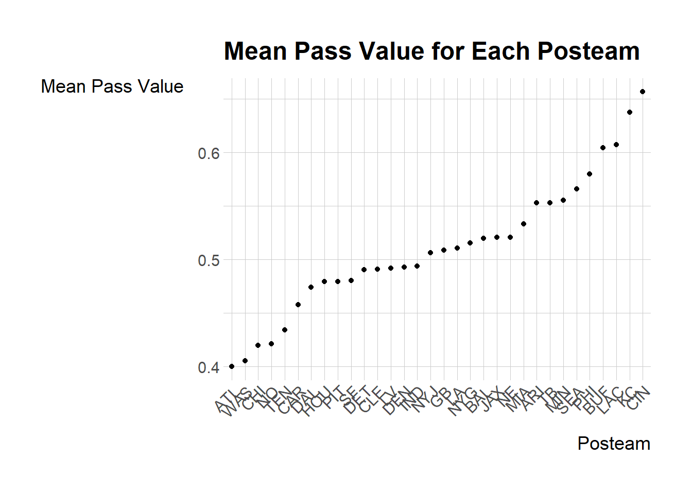

NFL2022_stuffs <- read_csv('https://bcdanl.github.io/data/NFL2022_stuffs.csv')Let’s analyze the NFL2022_stuffs data:
Variable description - play_id: Numeric play identifier that when used with game_id and drive provides the unique identifier for a single play
game_id: Ten digit identifier for NFL game.
drive: Numeric drive number in the game.
week: Season week.
posteam: String abbreviation for the team with possession.
qtr: Quarter of the game (5 is overtime).
half_seconds_remaining: Numeric seconds remaining in the half.
down: The down for the given play. Basically you get four attempts (aka downs) to move the ball 10 yards (by either running with it or passing it). If you make 10 yards then you get another set of four downs.
pass: Binary indicator if the play was a pass play.
wp: Estimated winning probability for the posteam given the current situation at the start of the given play.
#Q2a. In data.frame, NFL2022_stuffs, remove observations for which values of posteam is missing.
NFL2022_stuffs <- read_csv('https://bcdanl.github.io/data/NFL2022_stuffs.csv')
NFL2022_stuffs_clean <- NFL2022_stuffs %>%
filter(!is.na(posteam))
head(NFL2022_stuffs_clean)# A tibble: 6 × 10
play_id game_id drive week posteam qtr down half_seconds_remaining pass
<dbl> <chr> <dbl> <dbl> <chr> <dbl> <dbl> <dbl> <dbl>
1 43 2022_01_… 1 1 NYJ 1 NA 1800 0
2 68 2022_01_… 1 1 NYJ 1 1 1796 0
3 89 2022_01_… 1 1 NYJ 1 1 1769 1
4 115 2022_01_… 1 1 NYJ 1 2 1765 0
5 136 2022_01_… 1 1 NYJ 1 3 1741 1
6 172 2022_01_… 1 1 NYJ 1 4 1733 0
# ℹ 1 more variable: wp <dbl>##Q2b. Summarize the mean value of pass for each posteam when all the following conditions hold: 1. wp is greater than 20% and less than 75%; 2. down is less than or equal to 2; and 3. half_seconds_remaining is greater than 120.
Q2b_answer <- NFL2022_stuffs %>%
filter(wp > 0.20, wp < 0.75, down <= 2, half_seconds_remaining > 120) %>%
group_by(posteam) %>%
summarize(mean_pass = mean(pass, na.rm = TRUE)) %>%
arrange(desc(mean_pass))
kable(Q2b_answer)| posteam | mean_pass |
|---|---|
| CIN | 0.6567460 |
| KC | 0.6376068 |
| LAC | 0.6076190 |
| BUF | 0.6043956 |
| PHI | 0.5801217 |
| SEA | 0.5662188 |
| MIN | 0.5555556 |
| TB | 0.5529412 |
| ARI | 0.5528455 |
| MIA | 0.5334646 |
| NE | 0.5208333 |
| JAX | 0.5207921 |
| BAL | 0.5198330 |
| NYG | 0.5153846 |
| LA | 0.5104895 |
| GB | 0.5088496 |
| NYJ | 0.5061728 |
| IND | 0.4938525 |
| DEN | 0.4930796 |
| LV | 0.4921569 |
| CLE | 0.4908722 |
| DET | 0.4906542 |
| SF | 0.4805726 |
| PIT | 0.4796296 |
| HOU | 0.4793388 |
| DAL | 0.4742647 |
| CAR | 0.4578947 |
| TEN | 0.4342723 |
| NO | 0.4214464 |
| CHI | 0.4198312 |
| WAS | 0.4054581 |
| ATL | 0.4000000 |
###Q2c Provide both (1) a ggplot code with geom_point() using the resulting data.frame in Q2b and (2) a simple comments to describe the mean value of pass for each posteam. In the ggplot, reorder the posteam categories based on the mean value of pass in ascending or in descending order.
ggplot(Q2b_answer, aes(x = reorder(posteam, mean_pass), y = mean_pass)) +
geom_point() +
labs(x = "Posteam", y = "Mean Pass Value", title = "Mean Pass Value for Each Posteam") +
theme(axis.text.x = element_text(angle = 45, hjust = 1))
The scatter plot shows varying mean pass values across NFL teams, with the ordering highlighting teams that pass more frequently under specific conditions.
####Q2d Consider the following data.frame, NFL2022_epa:
NFL2022_epa <- read_csv('https://bcdanl.github.io/data/NFL2022_epa.csv')Variable description for NFL2022_epa
play_id: Numeric play identifier that when used with game_id and drive provides the unique identifier for a single play
game_id: Ten digit identifier for NFL game.
drive: Numeric drive number in the game.
posteam: String abbreviation for the team with possession.
passer: Name of the player who passed a ball to a receiver by initially taking a three-step drop and backpedaling into the pocket to make a pass. (Mostly, they are quarterbacks)
receiver: Name of the receiver.
epa: Expected points added (EPA) by the posteam for the given play.
Create the data.frame, NFL2022_stuffs_EPA, that includes
All the variables in the data.frame, NFL2022_stuffs; The variables, passer, receiver, and epa, from the data.frame, NFL2022_epa. by joining the two data.frames. In the resulting data.frame, NFL2022_stuffs_EPA, remove observations with NA in passer. ## Create NFL2022_stuffs_EPA DataFrame
Joining NFL2022_stuffs with NFL2022_epa and removing observations with NA in passer.
NFL2022_stuffs_EPA <- NFL2022_stuffs %>%
left_join(NFL2022_epa, by = c("play_id", "game_id")) %>%
filter(!is.na(passer))
head(NFL2022_stuffs_EPA)# A tibble: 6 × 15
play_id game_id drive.x week posteam.x qtr down half_seconds_remaining
<dbl> <chr> <dbl> <dbl> <chr> <dbl> <dbl> <dbl>
1 89 2022_01_BA… 1 1 NYJ 1 1 1769
2 136 2022_01_BA… 1 1 NYJ 1 3 1741
3 202 2022_01_BA… 2 1 BAL 1 1 1722
4 230 2022_01_BA… 2 1 BAL 1 2 1701
5 301 2022_01_BA… 2 1 BAL 1 2 1579
6 412 2022_01_BA… 3 1 NYJ 1 2 1451
# ℹ 7 more variables: pass <dbl>, wp <dbl>, drive.y <dbl>, posteam.y <chr>,
# receiver <chr>, passer <chr>, epa <dbl>